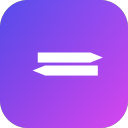
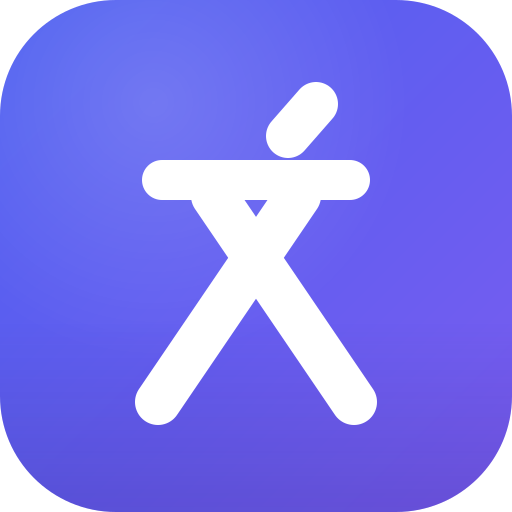
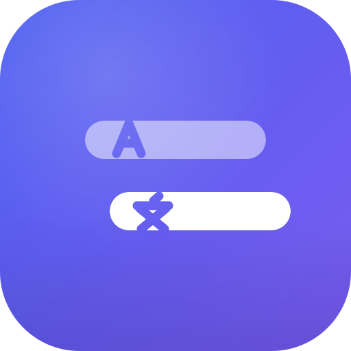
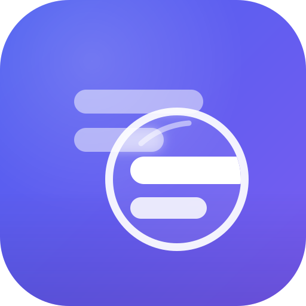
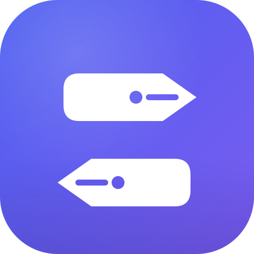

2026-09-23，共四个方向。所有方案统一回归应用内品牌渐变 靛蓝 #4C5FF0 → 紫 #7A5CF0（styles.css 中的 --accent-grad），让图标与界面是同一套语言；差异只在图形本身，便于聚焦比较。

三个问题：颜色偏离应用内的靛蓝主色，图标与界面脱节；两个笔尖在小尺寸下读作“等号”或“编辑”，翻译的含义传不出来；笔尖造型细节多，缩小到 16px 时糊成一团。
几何化的汉字「文」：点、横、撇、捺，圆头粗笔
翻译的落点是文字，一个“文”字同时说出文字、译文、文化三层意思。方案一不做双语并排——那是 Google 翻译走了十年的路——而是把“文”重写成一枚几何字标：笔画全部换成圆头粗笔，撇捺交叉成稳定的 X 骨架，远看像一个交换的结。对中文用户它是可读的字，对国际用户它是一枚带东方身份的抽象记号。
四个方案里唯一“只此一家”的图形；24px 以下点画并入横画，整体仍保持“上有横、下交叉”的轮廓记忆。
推荐

原文淡、译文实，字穿孔嵌入行首
直接抽象产品的核心画面：原句上浮现译文。上行半透明是原文，行首穿孔 A；下行实白是译文，行首穿孔文，整体右移一步表示“译出一层”。缩到 16px 退化为两行文字，依然干净。

玻璃透镜之下，文字由模糊变清晰
“沉浸”的具象化：隔着透镜看文字，镜外模糊的是原文，镜内聚焦的是译文。气质偏精致、工具感强；风险是圆环 + 内容的构图在远看时容易和搜索类产品混淆。

现版笔尖基因的整理与延续
保留老用户认知：两只钢笔尖一上一下、指向相反，如两种语言在互换。相比现版，笔尖有了明确的结构（笔缝、气孔），配色回归品牌靛蓝。是四个方向里最保守、迁移成本最低的一个。
每条任务栏从左到右：现状、方案一（高亮为选中态）、方案二、方案三、方案四。深浅两种系统主题下，四个新方案的品牌色一致性与现版品红形成明显对比。